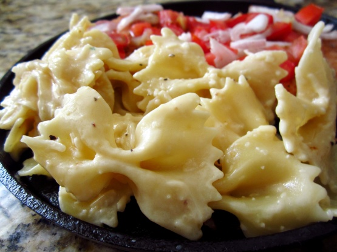

Click on tab items below to open the menus
Tabouli From Lebanon
Ingredients:
1 cup water
1 cup fine cracked wheat
1 cup minced fresh parsley leaves
1/2 cup minced fresh mint leaves
1/2 cup finely chopped yellow onion
3 tomatoes, diced
2 cucumbers, seeded and diced
3 tablespoons olive oil
3 tablespoons lemon juice, or to taste
1 teaspoons sea salt
Directions:
In a large mixing bowl, pour the water over the cracked wheat and cover, let stand about 20
minutes until wheat is tender and water is absorbed. Add the chopped herbs and
vegetables and toss with the mix. Combine the oil, lemon juice, and salt in a separate bowl.
Add to wheat mixture and mix well. Chill. Serve and enjoy.
Tzatziki From Greece

Ingredients:
1 kg strained yogurt.
1 cup olive oil.
2 tsp. Vinegar.
1 large whole cucumber with peel.
4 cloves garlic.
1 cup chopped dill.
2 tbs chopped mint.
Pinch of salt.
For decorating.
2 tsp olive oil.
some black olives.
Directions:
Wash the cucumbers whole with the peel, cut the edges and grate from the thick side of a grater.
Lightly season with salt and leave in a colander to strain fluids for about 15 minutes.
Then press by hand to dry completely.
Put the yogurt in a large bowl. Add the cucumber and mix well.
Mash the garlic in a mortar with a little salt until creamy and put into the yogurt .
Mix well, add the olive oil and vinegar.
Season with salt lightly, add the dill and mint and stir.
Serve in bowls, drizzle with a little oil and decorate with black olives.
Creamy Italian Noodles
creamy Noodles from Italy" style="width:304px;height:228px;">
Ingredients:
1(8 ounce) package wide egg noodles
envelope Italian salad dressing mix
1/2 cup evaporated milk
1/4 cup butter
1/2 cup parmesan cheese
Directions:
Cook the noodles and drain well.
Combine the rest of the ingredients and blend well.
Enjoy!
Omelette from Spain
,
Omelette" style="width:304px;height:228px;">
Ingredients:
servicing 2 people
3 small potatoes
4 eggs
1 onion
salt
olive oil
Directions:
Peel potatoes.
Cut potatoes and onion into small cubes.
Add salt (to taste) to potatoes and fry them until they are .
lightly crunchy. in olive oil.
About the last 5 mins of cooking add the onion to the .
potatoes. When tender, transfer potatoes and onion to .
papertowels to drain..
Beat the eggs with a pinch of salt..
Lightly coat frying pan with olive oil. Add the eggs, potatoes .
and onions and cook over low heat, flipping .
omelette once to cook other side..
Cooking is a creative process, and this recipe lends itself .
to your creativity! Add spices, herbs, meats, veggies and cheese to your taste. This is just the base to a .
Spanish omelette.